To enlarge, click some photos which have titles in light blue color background.
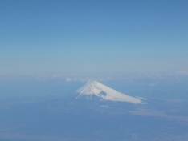 | 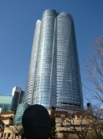 | 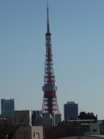 | 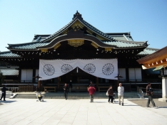 |
| Mt. Fuji | Roppongi Hills | Tokyo Tower | Yasukuni shrine |
On the way to Tokyo I saw Mt.Fuji from the airplane as maybe first time. Surprised at the size, we looked in a new noted place, Roppongi Hills. Then, I felt familiar for Tokyo Tower because of a old symbol of Tokyo. We also stopped at Yasukuni shrine and prayed.
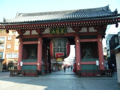 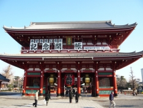 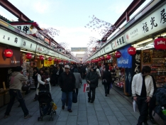 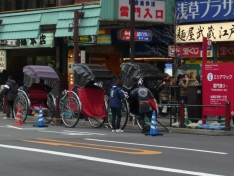
We stayed a small hotel in Asakusa for three night.
Asakusa is a popular shitamachi. It is a old downtown and it leaves the atmosphere, so many foreigners come here. Especially, the unique gate, Kaminarimon and lined stalls, Nakamise are loved by tourists.
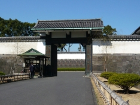 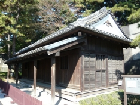 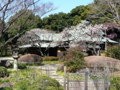 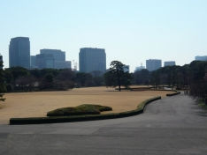
Edo-jo give us special image as a old capital symbol, because in period drama it always shows us the outstanding and beautiful figure. However there is nothing but a few gates and small houses.
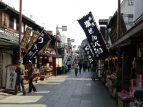 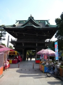 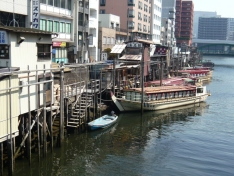 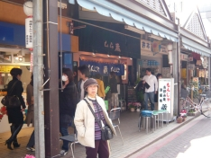
Shibamata where hero Torasan in the popular movie was brought up is famous for shitamati.
We walked all the day, looking around town to town. Tokyo was the capital of the water and some river through this big city. Then we found ships which move up and down for sightseening called yakatabune. Tsukishima is reclaimed land made in the Meiji era. Monjya street in this town is famous for Monjayaki which is a type of Japanese pan-fried batter.
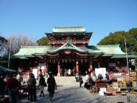 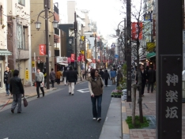 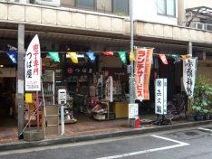 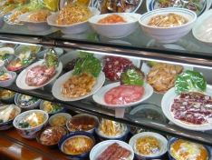
Tokyo, especially shitamati interests us and we feel towns nostalgic because we know most of these town names in period drama and films.
We strolled about Tsukudazima, Fukagawa and these areas where outlaws hung around in Edo period.
Before World War II, Kagurazaka was a prospered district as the world of the geisha.
I didn't know the name, Kappabashi before a few year. This town is popular not only with customers but also with foreigners for goods which restaurants use.
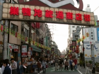 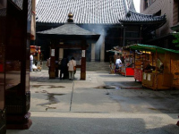
Sugamo is well known for Jizo-dori , a popular shopping street for the older generation, and this area is known as the "Harajuku of the old ladies".
Asakusa
Senso-ji 01 Senso-ji 02 Senso-ji Naka-mise infront of Kaminari-mon
Ruins of a castle
Edo-jo Wadakura-mon Edo-jo Oubansyo Edo-jo Suwa-tyaya Edo-jo the site
Tokyo "Shitamachi" stroll 01
Shibamata Taisyakuten 01 Shibamata Taisyakuten 02 Yakatabune Tsukisima
Tokyo "Shitamachi" stroll 02
Fukagawa Tomiokahatiman-gu Kagurazaka Kappabashi 01 Kappabashi 02
Tokyo "Shitamachi" stroll 03
Sugamo 01 Sugamo 02
{kind=link}
{kind=link}
{kind=link}
{kind=link}
{kind=link}
{kind=link}
{kind=link}
{kind=link}
{kind=link}
{kind=link}
{kind=link}
{kind=link}
{kind=link}
{kind=link}
{kind=link}
{kind=link}
{kind=link}
{kind=link}
{kind=link}
{kind=link}